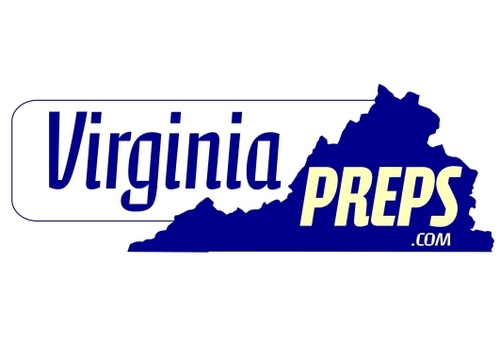

Since my sophomore year at Virginia Tech, I have been a Sports Staff Writer at Collegiate Times: the student-run newspaper at Virginia Tech. My duties have included:
- Writing articles
- Report on live games
- Interviewing coaches and player

Virginia Preps
Virginia Preps is a website dedicated to publishing daily high school sports news in Virginia. As a high school sports staff writer my duties have included:
- Beat writer for high school football
- Write articles, interview coaches and players